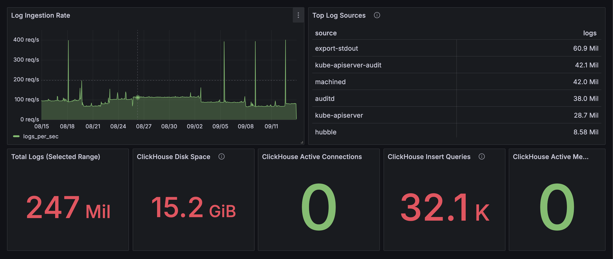
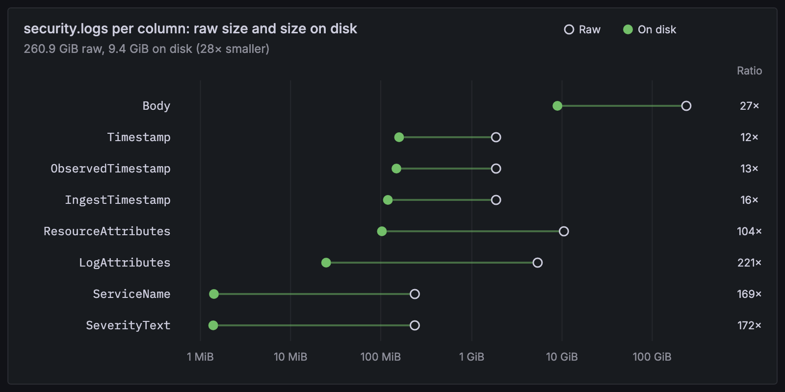
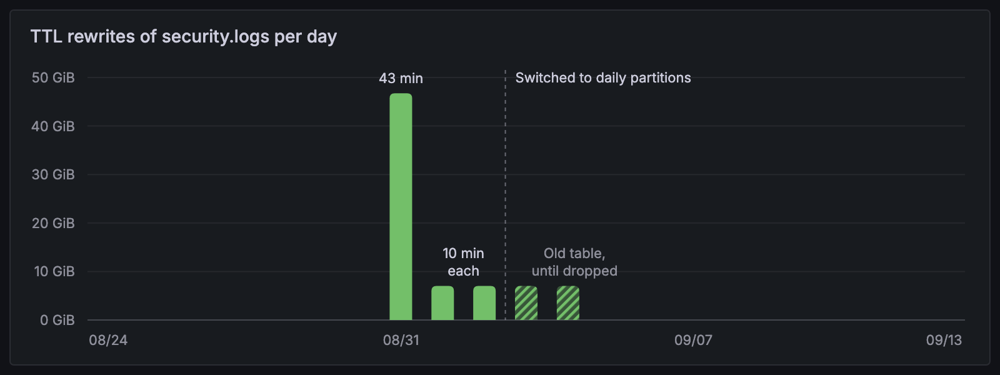
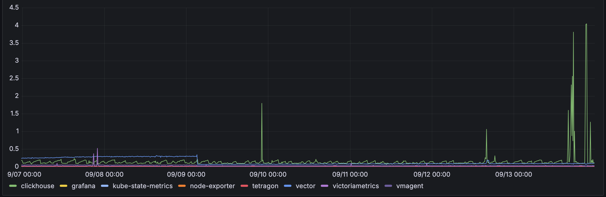

Everything in my homelab logs somewhere I can query. Container stdout, Talos host services, the Kubernetes audit log, process events, dropped network flows, and my router’s firewall all land in one ClickHouse table. Metrics live next door in VictoriaMetrics, and Grafana sits on top of both.
It’s self-hosted end to end, partly to own the data and partly because it’s the foundation for my detection pipeline.
Architecture
flowchart LR subgraph node[Every node] podlogs[Pod logs<br/>incl. audit + Tetragon] --> agent[Vector agent] talos[Talos service logs<br/>incl. auditd] --> agent end unifi[UniFi devices] --> syslogrx[Vector syslog receiver] hubble[Hubble dropped flows] --> hubblerx[Vector Hubble receiver] agent --> gw[Vector gateway<br/>normalize, redact, buffer] syslogrx --> gw hubblerx --> gw gw --> ch[(ClickHouse)] vmagent[vmagent] --> vm[(VictoriaMetrics)] ch --> grafana[Grafana] vm --> grafana ch --> detections[Detection orchestrator] grafana --> discord[Discord] detections --> discord
Collection
A Vector agent runs as a DaemonSet on every node:
- Pod logs: tailed straight from the host filesystem.
- Talos service logs: Talos has no shell and no log files to tail, so a machine config patch sends them as JSON lines to a loopback port the agent listens on.
- Kernel audit events:
auditdruns as a Talos service, so its records arrive with the service logs. - Kubernetes audit log: a Talos patch routes the apiserver audit backend to stdout, so audit events ride the pod log path and get re-tagged as their own dataset.
- Tetragon: process events come out of Tetragon’s export sidecar on stdout, so they take the same path.
Two sources come from outside the node agents:
- UniFi: a small syslog receiver on the server network.
- Hubble: a receiver runs the
hubbleCLI and keeps only the flows Cilium dropped.
The gateway
Everything funnels into one Vector gateway. It’s the only thing allowed to write to the logs table, so there’s one place to get redaction right and one set of insert credentials. It does three jobs:
- normalizes every source into one OpenTelemetry-shaped table
- runs five redaction passes for credential-shaped strings before anything is stored, skipping the audit log’s body, which the audit policy already keeps Secret values out of
- holds a disk buffer, so a ClickHouse restart means a backlog instead of lost logs. The agents and receivers keep smaller buffers of their own, so a short gateway restart doesn’t lose logs either.
Storage

Thirty days of security.logs in Grafana. export-stdout is Tetragon’s export sidecar.
ClickHouse runs as a single node on Enterprise, the biggest of my three nodes. All logs go into one table:
CREATE TABLE security.logs
(
Timestamp DateTime64(3) CODEC(DoubleDelta, ZSTD(1)),
ObservedTimestamp DateTime64(3) CODEC(DoubleDelta, ZSTD(1)),
IngestTimestamp DateTime64(3) DEFAULT now64(3) CODEC(DoubleDelta, ZSTD(1)),
TraceId String DEFAULT '',
SpanId String DEFAULT '',
SeverityText LowCardinality(String) DEFAULT '',
SeverityNumber UInt8 DEFAULT 0,
ServiceName LowCardinality(String),
Body String CODEC(ZSTD(3)),
ResourceAttributes Map(LowCardinality(String), String),
LogAttributes Map(LowCardinality(String), String)
)
ENGINE = MergeTree
PARTITION BY toDate(Timestamp)
ORDER BY (ServiceName, Timestamp)
TTL toDateTime(Timestamp) + INTERVAL 30 DAY
SETTINGS ttl_only_drop_parts = 1;
Raw and on-disk size per column, from system.columns.
One raw table keeps ingestion simple. A plain view per source gives each one typed columns: apiserver_audit_events, process_events, hubble_deny_events, and so on. The per-source views filter on ServiceName, which is first in the sort key, so a query against one source skips everything else.
Partitions are daily because monthly ones were expensive. With a 30-day TTL, ClickHouse can only drop a whole part once every row in it has expired. Once rows started expiring, it rewrote a 7 GiB partition every day just to trim one day off it: about 10 minutes of CPU each time, 43 minutes the first day, and I could hear it through the case fan. Daily partitions mean an expired day is dropped as metadata, with no rewrite.

What ClickHouse’s system.part_log recorded. The first day with expired rows rewrote 47 GiB. The last two bars are the old monthly table, which kept rewriting until I dropped it.
Three ClickHouse users keep access narrow:
- The gateway: insert only.
- Grafana: read only, with caps on concurrency and query time.
- The detection orchestrator: reads logs, and writes only to its own tables.
Metrics
VictoriaMetrics runs single-node with 30 days of retention. vmagent on Picard scrapes kubelet, cAdvisor, kube-state-metrics, node-exporter, and anything annotated for scraping.
Grafana
Grafana runs on Picard, deliberately not on the node that hosts ClickHouse. If Enterprise goes down, the thing that’s supposed to tell me about it hasn’t gone down with it.
Dashboards and alert rules live in Git, one file per dashboard or rule group, provisioned into Grafana. Alerts cover pipeline health, infrastructure, scheduled jobs, the detection orchestrator, and a few security rules that haven’t moved to the orchestrator, all routed to one Discord channel.
What it costs to run

A week of measured CPU. The pipeline averaged about 0.4 cores. The spikes are my own ad-hoc searches scanning hundreds of GiB, which run ClickHouse up to its 4-core limit.
The table below is what the manifests declare: requests and limits, not measured usage. A week of measurements puts ClickHouse’s median CPU at about a tenth of its 1-core request, and the 4-core limit is what the ad-hoc search spikes in the chart run into. A few small sidecars aren’t listed. The detection sweep and drain are CronJobs, so they only hold their share for the few seconds each run takes.
| Component | Where | CPU request / limit | Memory request / limit |
|---|---|---|---|
| ClickHouse | Enterprise | 1 / 4 | 4 GiB / 8 GiB |
| Vector gateway | Enterprise | 250m / 1 | 512 MiB / 2 GiB |
| Vector agent | Every node | 100m / 500m | 128 MiB / 512 MiB |
| UniFi syslog receiver | Enterprise | 50m / 250m | 64 MiB / 256 MiB |
| Hubble receiver | Any node | 50m / 250m | 64 MiB / 256 MiB |
| VictoriaMetrics | Enterprise | 200m / 1 | 768 MiB / 2 GiB |
| vmagent | Picard | 100m / 500m | 128 MiB / 512 MiB |
| kube-state-metrics | Picard | 50m / 200m | 64 MiB / 256 MiB |
| node-exporter | Every node | 50m / 200m | 64 MiB / 128 MiB |
| Grafana | Picard | 100m / 500m | 128 MiB / 512 MiB |
| Tetragon agent | Every node | 100m / 500m | 128 MiB / 512 MiB |
| Detection sweep | Any node | 50m / 250m | 64 MiB / 128 MiB |
| Detection drain | Any node | 50m / 250m | 64 MiB / 128 MiB |
| Total (three nodes) | ~2.7 / ~11.8 | ~6.8 GiB / ~17.4 GiB |
Why this stack?
ClickHouse was the real decision, so it gets its own section below: Why ClickHouse and not a SIEM?
Vector
Fluent Bit was the alternative. It’s smaller, but Vector fits this design better:
- a documented agent and aggregator topology, which is exactly the gateway trust boundary I wanted
- a native ClickHouse sink with acknowledgements and disk buffers
- transforms good enough for normalization and redaction in config
The cost is VRL, one more small language to maintain.
VictoriaMetrics
It’s Prometheus-compatible, so every exporter and dashboard just works. The separate vmagent scraper buffers to disk if the store is unavailable, and VictoriaMetrics stores the same history in less space than Prometheus. I skipped kube-prometheus-stack on purpose: operators, CRDs, and a pile of default rules are more than three nodes need.
Grafana
One UI over both stores, so logs and metrics sit side by side.
Why ClickHouse and not a SIEM?
The usual homelab answer for security monitoring is a SIEM. Wazuh gets recommended most, with Security Onion and Elastic Security close behind. I’ve considered running one twice, and both times I picked a plain data store.
What a SIEM gives you
A SIEM is a whole product: agents to collect logs, an index to store them, a rule library, correlation, and somewhere to review what fired. Wazuh and Elastic Security can act on an alert, not just raise it.
What a SIEM would cost me
- Memory. Every node is shared with Jellyfin, game servers, and everything else I run. Enterprise has 64 GB, Odo 32 GB, and Picard 8 GB. Security Onion asks for 24 GB for a standalone install. Wazuh wants 4 to 8 GB for its indexer once you have more than a handful of agents, and Elasticsearch wants 8 GB or more, with at least 4 GB of that as JVM heap. For comparison, this whole pipeline, Tetragon and the detection orchestrator included, requests about 7 GiB across all three nodes, with limits of about 17 GiB (see the cost table above).
- A second pipeline. Wazuh, Security Onion, and Elastic Security all want to own ingestion, through their own agents, Beats, or syslog forwarding. None of them reads what Vector already normalizes. Kubernetes, Talos, and flow logs would still need a general pipeline, so I’d be running a second log store (OpenSearch or Elasticsearch underneath) next to the first one, not replacing it.
- Rewriting detections. By the second time, I had about 20 detection and alert rules tuned against real traffic. Moving meant rewriting every one in Wazuh’s XML rules or Elastic’s EQL and KQL, then proving each one again.
- Solving a bigger problem than mine. A SIEM is built for a SOC: many analysts, case management, round-the-clock triage. I’m one person with homelab-scale volume, so I’d be running a SOC’s tooling for an audience of one.
The data stores I compared
Without a SIEM, the question becomes which store to put under Grafana, with detections written as code:
| Store | Best at | Trade-off |
|---|---|---|
| ClickHouse | SQL over structured events, compression, fast scans | Schema, tuning, and query memory are my job |
| VictoriaLogs | The simplest, lightest single-node log store | LogsQL instead of SQL |
| Loki | Kubernetes log search with a mature UI | Label discipline is load-bearing, and LogQL is awkward for multi-event questions |
| OpenSearch Security Analytics | Sigma rules, findings, and correlation: halfway to a SIEM | The heaviest to run by far: JVM heap, indices, mappings, and a security plugin |
| PostgreSQL or TimescaleDB | Familiar SQL in a small deployment | Not built for continuous high-volume ingest and wide time scans |
| Parquet and DuckDB | Almost nothing running when idle, great for local analysis | No continuous ingest, retention, or alerting. Better as an offline archive |
Why ClickHouse won
- SQL. It’s the language I already write detections in at my day job. A second query language is an ongoing cost, not just a learning curve.
- One database for everything. Raw events, ad-hoc hunting, aggregations, and detections all run against the same tables. Questions that span sources are just a join: one of my detections checks a shell in a Jellyfin pod against the Kubernetes audit log to see whether I opened it with
kubectl execa few seconds earlier. - Not the smallest footprint. VictoriaLogs is lighter, and would have won if every detection were a single-source filter. Mine join across sources.
The cost is real: the partitioning in Storage rewrote gigabytes a day before I fixed it. A SIEM would have swapped that work for its own: shard counts, JVM heap, and index lifecycle policies.
What I gave up is the SIEM’s workflow: a Sigma rule library, a findings UI, built-in response. I’m building back the small pieces I actually need. The detection pipeline post covers the runner.
What isn’t built yet
- mTLS between agents and the gateway. It’s in the design. Cilium network policy is the boundary for now.
- Kernel log forwarding from Talos. Kernel audit events arrive through
auditd, but the kernel’s own message log doesn’t. - An external dead man’s switch. The pipeline can’t report its own total loss from inside the cluster.
- Typed materialized tables for the busiest sources. Parsing JSON at query time is fine at today’s volume.
- Cases for detection alerts. Every alert should end with a recorded disposition.